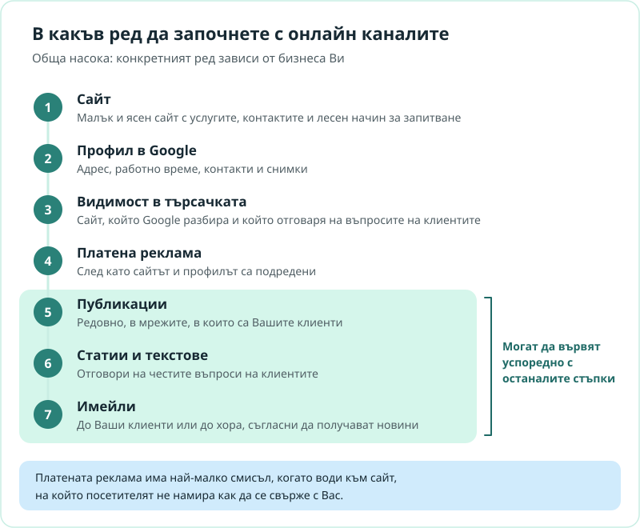
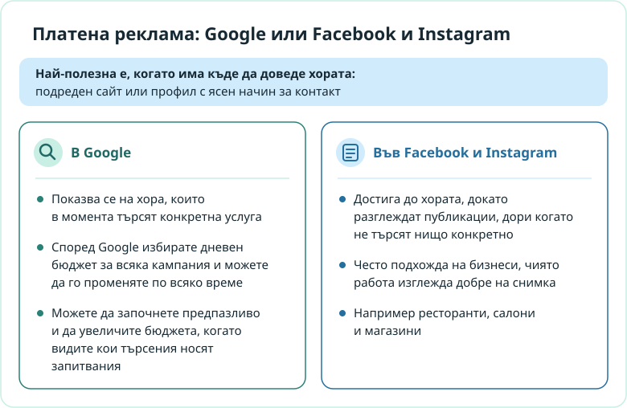

Съвети
Дигитален маркетинг за малкия бизнес: от какво да започнете
Тук обясняваме какво е дигитален маркетинг за малкия бизнес и с кои канали има смисъл да започнете. Предлагаме следния ред: сайт, профил в Google, видимост в търсачката, платена реклама, публикации, статии и имейли. За всяка стъпка ще прочетете кога е подходяща и как да разберете дали дава резултат. Обясненията са на разбираем език, без статистики и без обещания за бързи резултати.
Обновено
Какво е дигитален маркетинг за малкия бизнес?
Под това понятие се разбира всичко, с което представяте бизнеса си онлайн: сайтът, профилът в Google, видимостта в търсачката, рекламите, публикациите и имейлите до клиентите. Често се използва и изразът „онлайн маркетинг“, като в повечето случаи двата израза означават едно и също.
Човек, който търси ресторант, автосервиз или салон, обикновено първо проверява в телефона си. Там вижда адреса, работното време и снимките и едва тогава решава дали да се обади или да пише.
Разликата с традиционната реклама, като листовки, табели или обяви в местни медии, е, че при онлайн каналите по-лесно виждате откъде е дошло запитването. Така можете по-рано да промените посоката и да не губите време с канал, който не носи клиенти. От първия ден не се налага да присъствате навсякъде, стига всеки следващ канал да стъпва на предишния.
От какво да започнете и в какъв ред?
Добрият ред започва от основата, която остава Ваша, и продължава към каналите, които изискват постоянна работа или рекламен бюджет. Последователността по-долу е обща насока, а конкретният ред зависи от бизнеса Ви и от това къде вече Ви търсят клиентите.

- Сайт. Малък и ясен сайт с услугите, контактите и лесен начин за запитване.
- Профил в Google. Адрес, работно време, контакти и снимки, които хората виждат в Google Maps и в търсачката.
- Видимост в търсачката. Сайт, който Google разбира и който отговаря на въпросите на клиентите.
- Платена реклама. Кампании в Google или във Facebook и Instagram, след като сайтът и профилът са подредени.
- Публикации. Редовно присъствие в мрежите, в които са Вашите клиенти.
- Статии и текстове. Отговори на честите въпроси, които помагат на хората да Ви намерят и да Ви се доверят.
- Имейли. Съобщения до хора, които вече са Ваши клиенти или са се съгласили да получават новини.
Публикациите, статиите и имейлите могат да вървят успоредно с останалите стъпки. Платената реклама има най-малко смисъл, когато води към сайт, на който посетителят не намира как да се свърже с Вас.
Защо сайтът и профилът в Google идват първи?
Сайтът е мястото онлайн, което контролирате изцяло. Вие решавате какво пише в него, как са подредени услугите и как клиентът изпраща запитване. Рекламите, публикациите и профилът в Google в крайна сметка водят хората натам.
Профилът в Google е това, което хората виждат, когато търсят името Ви или услуга наблизо в Google Maps. Google посочва, че чрез профила управлявате как бизнесът Ви се показва в Maps и в търсачката, без такса за това. Поради това профилът е сред първите стъпки за всеки бизнес с адрес или с район, в който работи.
Как да Ви намират клиентите в търсачката?
SEO (оптимизация за търсачки) е работата, с която помагате на Google да разбере съдържанието на сайта Ви, а на хората да Ви открият при търсене. На практика това означава сайт, който работи добре и на телефон, ясни заглавия и текстове за всяка услуга и страници, които отговарят на това, което клиентите търсят.
Резултатите идват постепенно. Според ръководството на Google за начинаещи някои промени се отразяват за няколко часа, а други могат да отнемат няколко месеца, и обикновено е добре да изчакате няколко седмици, преди да прецените ефекта. Видимостта в търсачката е канал, който започвате рано и поддържате дълго.
Ако сайтът Ви вече съществува, но не се показва при търсене, оптимизацията на сайта за търсачката обхваща техническата част, текстовете на страниците и връзките от други сайтове.
Кога има смисъл от платена реклама?
Платената реклама показва бизнеса Ви на хората, докато плащате за нея. Тя е най-полезна, когато има къде да доведе хората: подреден сайт или профил с ясен начин за контакт. Полезна е, когато искате запитвания по-скоро, когато пускате нова услуга или когато търсенето при Вас е сезонно.
В Google рекламата се показва на хора, които в момента търсят конкретна услуга. Google посочва, че за всяка кампания избирате дневен бюджет според целите си и можете да го променяте по всяко време. Така можете да започнете предпазливо и да увеличите бюджета, когато видите кои търсения носят запитвания. Ако предпочитате някой да планира и следи това вместо Вас, вижте кампаниите в Google с маркетинг специалист.
Във Facebook и Instagram рекламата достига до хората, докато разглеждат публикации, дори когато не търсят нищо конкретно. Тя често подхожда на бизнеси, чиято работа изглежда добре на снимка, като ресторанти, салони и магазини. Повече подробности ще намерите на страницата за това как работим с кампании във Facebook и Instagram.

Какво място имат публикациите, статиите и имейлите?
Профил във всяка мрежа не е задължителен. По-полезно е да изберете мрежите, в които са Вашите клиенти, и да публикувате там редовно, отколкото да поддържате много профили без нови публикации.
- Публикации. Снимки на работата, новини и полезни съвети поддържат профила активен и напомнят на клиентите за Вас.
- Статии на сайта. Текстове, които отговарят на въпросите на клиентите, помагат и в търсачката, и при решението да се свържат с Вас.
- Имейли. Кратки съобщения до хора, които са се съгласили да ги получават, например за нова услуга или за промяна в работното време.
Тези канали изискват постоянство повече от голям бюджет. Ако нямате време за всички, по-добре е да започнете с по-малко канали и да ги поддържате редовно.
Как да разберете кой канал работи?
Без проследяване е трудно да решите къде да вложите времето и бюджета си. Няколко прости навика дават достатъчно ясна картина още в началото.
- Питайте новите клиенти откъде са научили за Вас и записвайте отговора.
- Отбелязвайте откъде идва всяко запитване: от профила в Google, от сайта, от рекламите или от публикациите.
- Сравнявайте каналите преди всичко по запитванията и поръчките, които са донесли.
- Ако работите с маркетинг специалист, искайте редовен отчет с конкретни числа за всеки канал.
Когато виждате кой канал води до клиенти, можете да насочите повече усилия натам и да спрете онова, което не носи запитвания.
Как Xtra AI може да помогне с първите стъпки?
Xtra AI работи с малки бизнеси в България и може да поеме част от каналите, описани по-горе. Изборът зависи от това какво вече имате и какво липсва.
- Сайт. Изграждаме сайтове и онлайн магазини и ги поддържаме след пускането.
- Видимост в търсачката. Работим по видимостта на сайта в Google: техническата част, текстовете на страниците и връзките.
- Реклама. Маркетинг специалист планира, пуска и следи рекламите и Ви отчита резултатите с конкретни числа.
- Съдържание и криейтиви. Собственият ни инструмент пише SEO статии, създава изображения и публикува в социалните мрежи по график, след като одобрите съдържанието. Подготвяме и брандирани визии всеки месец.
Първата стъпка е безплатна диагностика с 30-минутен разговор. След нея получавате оферта с приоритизирани решения и ясни еднократни цени. Срокът зависи от решението и го посочваме в офертата. Диагностиката не Ви задължава с нищо. Работим по GDPR и без дългосрочни договори. На страницата за диагностика можете да отбележите ситуациите, които познавате от своя бизнес.
Често задавани въпроси
Онлайн маркетингът различен ли е от дигиталния?
В повечето случаи двата израза се използват за едно и също: представянето на бизнеса чрез сайт, Google, реклами, публикации и имейли. Можете да срещнете и двата израза в една и съща статия или оферта.
Нужен ли е сайт, ако бизнесът вече има страница във Facebook?
Сайтът е мястото, което контролирате изцяло, докато страницата в мрежата зависи от правилата на платформата. Добре е да имате и сайт с услугите и контактите, към който да водят публикациите и рекламите.
Колко време е нужно, за да започне сайтът да се показва в Google?
Според Google някои промени се отразяват за часове, а други могат да отнемат няколко месеца, и е добре да изчакате няколко седмици, преди да прецените ефекта. Поради това видимостта в търсачката се започва рано и се поддържа дълго.
Колко струва дигиталният маркетинг за малък бизнес?
Цената зависи от каналите, които изберете. В Google Ads сами избирате дневен бюджет за всяка кампания и можете да го променяте по всяко време. При Xtra AI след безплатната диагностика получавате оферта с ясни еднократни цени.
Мога ли да се справя сам, без външна помощ?
Сайтът, профилът в Google и редовните публикации са по силите на много собственици, ако отделят време за тях. Рекламите и работата по видимостта в търсачката изискват повече познания и постоянно внимание, затова някои бизнеси ги възлагат на специалист.
Трябва ли бизнесът да има профил във всяка мрежа?
Не е нужно бизнесът да присъства във всяка мрежа. Обикновено е по-полезно да изберете мрежите, в които са Вашите клиенти, и да публикувате там редовно.
Свързани услуги
- Изработка на сайтИзграждаме сайтове за малки бизнеси и ги поддържаме след пускането, с кратък месечен отчет.Научете повече
- Социални мрежи и криейтивиПубликации по график след Вашето одобрение, брандирани криейтиви всеки месец и актуален Google профил.Научете повече
- Google бизнес профилКак да създадете, заявите и потвърдите Google бизнес профил и какво да проверявате в него всеки месец, включително отговорите на оценки и коментари.Научете повече
Първата стъпка е безплатна
Диагностиката не Ви обвързва с нищо. Показваме Ви точно какво можем да поправим и колко ще струва.